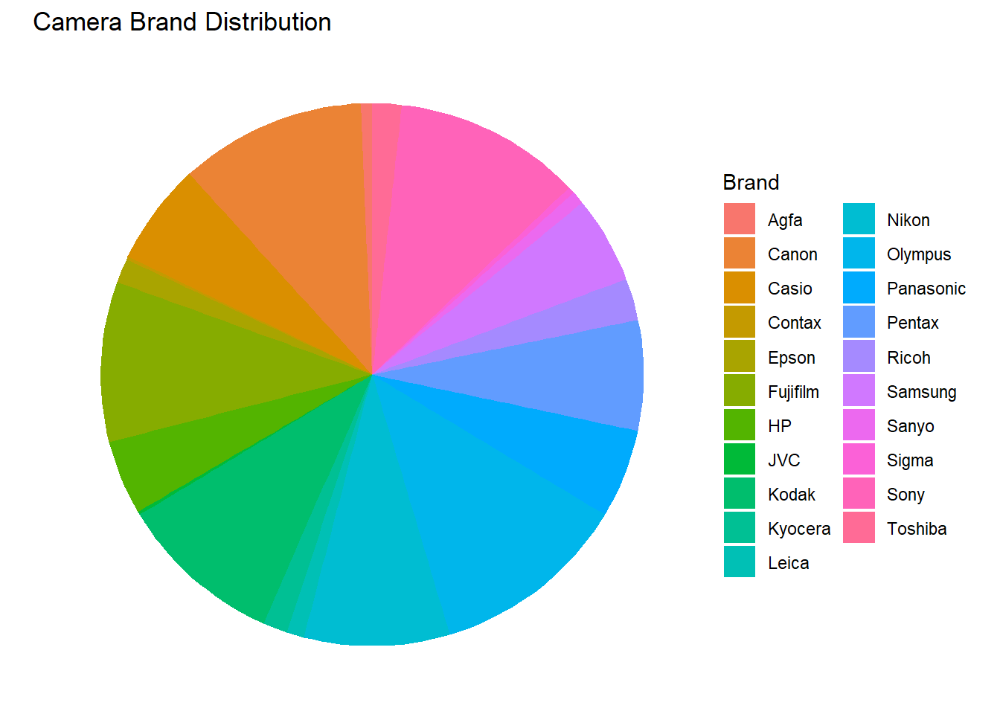
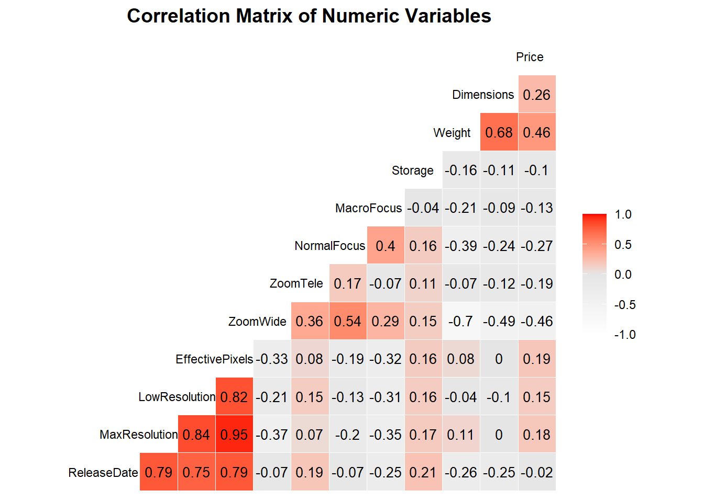

This data set is related to camera. It includes certain features of the camera. There are 13 properties related to these camera, which are: Model, Release date, Max resolution, Low resolution, Effective pixels, Zoom wide (W), Zoom tele (T), Normal focus range, Macro focus range, Storage included Weight (inc. batteries), Dimensions, and Price.
I will load the data set and see what is basic information for it.
This data set is related to camera. It includes certain features of the camera. There are 13 properties related to these camera, which are: Model, Release date, Max resolution, Low resolution, Effective pixels, Zoom wide (W), Zoom tele (T), Normal focus range, Macro focus range, Storage included Weight (inc. batteries), and Dimensions Price.
library(dplyr)
<<<<<<< HEAD 载入程序包：'dplyr'
The following objects are masked from 'package:stats': filter, lag
The following objects are masked from 'package:base': intersect, setdiff, setequal, union
library(tidyr) <<<<<<< HEAD library(ggplot2) library(GGally)
Registered S3 method overwritten by 'GGally': method from +.gg ggplot2
camera_data <- read.csv("https://raw.githubusercontent.com/Aspirine2212/5293-in-class-4-17/main/camera_dataset.csv") quantitative_vars <- camera_data[, c("Max.resolution", "Low.resolution", "Effective.pixels", "Zoom.wide..W.", "Zoom.tele..T.", "Normal.focus.range", "Weight..inc..batteries.", "Price")] stats_summary <- quantitative_vars |> summarise_all(list( mean = ~mean(., na.rm = TRUE), median = ~median(., na.rm = TRUE), sd = ~sd(., na.rm = TRUE), IQR = ~IQR(., na.rm = TRUE) )) |> pivot_longer( everything(), names_to = c("variable", "stat"), names_sep = "_" ) |> pivot_wider( names_from = variable, values_from = value ) stats_summary
# A tibble: 4 × 9 stat Max.resolution Low.resolution Effective.pixels Zoom.wide..W. <chr> <dbl> <dbl> <dbl> <dbl> 1 mean 2475. 1774. 4.60 33.0 2 median 2560 2048 4 36 3 sd 760. 831. 2.84 10.3 4 IQR 1024 1440 4 3 # ℹ 4 more variables: Zoom.tele..T. <dbl>, Normal.focus.range <dbl>, # Weight..inc..batteries. <dbl>, Price <dbl>
library(dplyr) library(ggplot2) library(stringr) #getting the group for year #camera_data <- camera_data |> #mutate(Year.Group = case_when( #Release.date >= 1994 & Release.date <= 1997 ~ "1994-1997", #Release.date >= 1998 & Release.date <= 2001 ~ "1998-2001", #Release.date >= 2002 & Release.date <= 2005 ~ "2002-2005", #Release.date >= 2006 & Release.date <= 2007 ~ "2006-2007" #)) #get the brand for each model camera_data <- camera_data |> mutate(brand = word(Model, 1)) camera_data |> count(brand, sort = TRUE)
library(dplyr) library(ggplot2) library(stringr) #getting the group for year camera_data <- camera_data |> mutate(Year.Group = case_when( Release.date >= 1994 & Release.date <= 1997 ~ "1994-1997", Release.date >= 1998 & Release.date <= 2001 ~ "1998-2001", Release.date >= 2002 & Release.date <= 2005 ~ "2002-2005", Release.date >= 2006 & Release.date <= 2007 ~ "2006-2007" )) #get the brand for each model camera_data <- camera_data |> mutate(brand = word(Model, 1)) camera_data |> count(brand, sort = TRUE)
brand n 1 Olympus 122 2 Sony 116 3 Canon 115 4 Kodak 102 5 Fujifilm 99 6 Nikon 90 7 Pentax 68 8 Casio 63 9 Panasonic 55 10 Samsung 54 11 HP 46 12 Ricoh 26 13 Toshiba 18 14 Epson 15 15 Kyocera 15 16 Leica 11 17 Sanyo 8 18 Agfa 7 19 Sigma 4 20 Contax 2 21 JVC 2
colnames(camera_data)
[1] "Model" "Release.date" [3] "Max.resolution" "Low.resolution" [5] "Effective.pixels" "Zoom.wide..W." [7] "Zoom.tele..T." "Normal.focus.range" [9] "Macro.focus.range" "Storage.included" [11] "Weight..inc..batteries." "Dimensions" [13] "Price" "brand"
camera_data <- camera_data %>% rename_with(~ gsub("\\.", "", .x)) %>% rename( ReleaseDate = Releasedate, MaxResolution = Maxresolution, LowResolution = Lowresolution, EffectivePixels = Effectivepixels, ZoomWide = ZoomwideW, ZoomTele = ZoomteleT, NormalFocus = Normalfocusrange, MacroFocus = Macrofocusrange, Weight = Weightincbatteries, Storage = Storageincluded, Brand = brand )
Find out how many missing values are there in the dataset.
library(dplyr) na_summary <- camera_data |> summarise(across(everything(), ~sum(is.na(.)))) |> pivot_longer(everything(), names_to = "variable", values_to = "na_count") |> mutate(na_percent = round(na_count / nrow(camera_data) * 100, 2)) na_summary
# A tibble: 14 × 3 ======= camera_data <- camera_data %>% rename_with(~ gsub("\\.", "", .x)) %>% rename( ReleaseDate = Releasedate, MaxResolution = Maxresolution, LowResolution = Lowresolution, EffectivePixels = Effectivepixels, ZoomWide = ZoomwideW, ZoomTele = ZoomteleT, NormalFocus = Normalfocusrange, MacroFocus = Macrofocusrange, Weight = Weightincbatteries, Storage = Storageincluded, YearGroup = YearGroup, Brand = brand )
camera_data <- camera_data %>% rename_with(~ gsub("\\.", "", .x)) %>% rename( ReleaseDate = Releasedate, MaxResolution = Maxresolution, LowResolution = Lowresolution, EffectivePixels = Effectivepixels, ZoomWide = ZoomwideW, ZoomTele = ZoomteleT, NormalFocus = Normalfocusrange, MacroFocus = Macrofocusrange, Weight = Weightincbatteries, Storage = Storageincluded, YearGroup = YearGroup, Brand = brand )
# A tibble: 15 × 3 >>>>>>> b6c8899eb2c888d991917a0de1f7989cbbb7e2a2 variable na_count na_percent <chr> <int> <dbl> 1 Model 0 0 2 ReleaseDate 0 0 3 MaxResolution 0 0 4 LowResolution 0 0 5 EffectivePixels 0 0 6 ZoomWide 0 0 7 ZoomTele 0 0 8 NormalFocus 0 0 9 MacroFocus 1 0.1 10 Storage 2 0.19 11 Weight 2 0.19 12 Dimensions 2 0.19 13 Price 0 0 <<<<<<< HEAD 14 Brand 0 0
Using PCA to fill out the missing values.
library(missMDA) library(FactoMineR) vars_for_imputation <- camera_data %>% select(where(is.numeric)) %>% select(where(~ !all(is.na(.)))) %>% select(where(~ sd(., na.rm = TRUE) > 0)) # PCA nb_pc <- estim_ncpPCA(vars_for_imputation, method = "Regularized")$ncp imputed_data <- imputePCA(vars_for_imputation, ncp = nb_pc) filled_data <- imputed_data$completeObs camera_data_filled <- camera_data camera_data_filled[names(vars_for_imputation)] <- filled_data sum(is.na(camera_data_filled))
[1] 0
Here are the basic information for the cleaned data frame.
library(dplyr) basic_stats <- camera_data_filled %>% select(where(is.numeric)) %>% summarise(across(everything(), list( mean = ~mean(., na.rm = TRUE), sd = ~sd(., na.rm = TRUE), median = ~median(., na.rm = TRUE), min = ~min(., na.rm = TRUE), max = ~max(., na.rm = TRUE) ), .names = "{.col}_{.fn}")) basic_stats_tidy <- basic_stats %>% pivot_longer(everything(), names_to = c("variable", ".value"), names_sep = "_") basic_stats_tidy
# A tibble: 12 × 6 variable mean sd median min max <chr> <dbl> <dbl> <dbl> <dbl> <dbl> 1 ReleaseDate 2004. 2.72 2004 1994 2007 2 MaxResolution 2475. 760. 2560 0 5616 3 LowResolution 1774. 831. 2048 0 4992 4 EffectivePixels 4.60 2.84 4 0 21 5 ZoomWide 33.0 10.3 36 0 52 6 ZoomTele 122. 93.5 108 0 518 7 NormalFocus 44.1 24.1 50 0 120 8 MacroFocus 7.79 8.10 6 0 85 9 Storage 17.5 27.4 16 0 450 10 Weight 319. 260. 226. 0 1860 11 Dimensions 105. 24.2 101 0 240 12 Price 457. 760. 199 14 7999
saveRDS(camera_data_filled, file = "camera_data_clean.rds")
Get a basic ideas on different brands for the camera.
library(ggplot2) camera_data_filled %>% count(Brand) %>% ggplot(aes(x = "", y = n, fill = Brand)) + geom_col(width = 1) + coord_polar(theta = "y") + labs(title = "Camera Brand Distribution") + theme_void()
##random Forest
library(randomForest)
randomForest 4.7-1.2
Type rfNews() to see new features/changes/bug fixes.
Attaching package: 'randomForest'
The following object is masked from 'package:ggplot2': margin
The following object is masked from 'package:dplyr': combine
# 去掉 Model 列 camera_data_rf <- camera_data_filled %>% select(-Model) # 构建模型 set.seed(123) rf_model <- randomForest(Price ~ ., data = camera_data_rf, importance = TRUE) # 提取变量重要性 importance_df <- importance(rf_model) %>% as.data.frame() %>% tibble::rownames_to_column("Variable") # 画图 library(ggplot2) ggplot(importance_df, aes(x = reorder(Variable, `%IncMSE`), y = `%IncMSE`)) + geom_col(fill = "steelblue") + coord_flip() + labs(title = "Variable Importance from Random Forest (Model Excluded)", x = "Variable", y = "% Increase in MSE") + theme_minimal()

Find out the correlations among variables.
library(GGally) numeric_vars <- camera_data_filled %>% select(where(is.numeric)) ggcorr(numeric_vars, label = TRUE, label_round = 2, label_size = 3.5, hjust = 0.75, size = 3, low = "white", mid = "gray90", high = "red", midpoint = 0, layout.exp = 1.2 ) + ggtitle("Correlation Matrix of Numeric Variables") + theme(plot.title = element_text(size = 14, face = "bold", hjust = 0.5))
#colnames(camera_data_rf)
##PDP plot single
library(randomForest) library(iml) library(ggplot2) X <- camera_data_rf[, setdiff(names(camera_data_rf), "Price")] predictor <- Predictor$new(rf_model, data = X, y = camera_data_rf$Price) pdp_zoom <- FeatureEffect$new(predictor, feature = "ZoomTele", method = "pdp") plot(pdp_zoom) + labs( title = "Partial Dependence Plot: ZoomTele vs Price", x = "Zoom Telephoto Range", y = "Predicted Price" ) + theme_minimal(base_size = 13)

Selecting out the ditributions for certain factors.
library(ggplot2) library(tidyr) camera_data_filled %>% select(Price, EffectivePixels, MaxResolution, Weight) %>% pivot_longer(cols = everything(), names_to = "variable", values_to = "value") %>% ggplot(aes(x = value)) + geom_histogram(bins = 30, fill = "steelblue", color = "white") + facet_wrap(~ variable, scales = "free") + labs(title = "Histograms of Key Numerical Variables", x = NULL, y = "Count")
pdp::partial(rf_model, pred.var = "LowResolution", train = camera_data_rf) %>% head()
LowResolution yhat 1 0.00 443.9874 2 99.84 440.8958 3 199.68 443.3180 4 299.52 443.8939 5 399.36 444.3494 6 499.20 442.5952
##PDP plot all
library(pdp) library(ggplot2) library(purrr)
Attaching package: 'purrr'
The following object is masked from 'package:pdp': partial
library(dplyr) #camera_data_rf %>% summarise(across(all_of(vars), ~n_distinct(.))) vars <- c("ZoomTele", "Weight", "LowResolution", "MaxResolution", "Dimensions", "ReleaseDate", "ZoomWide", "EffectivePixels", "MacroFocus", "NormalFocus") df <- map(vars, function(varname) { pd <- pdp::partial( object = rf_model, pred.var = varname, train = camera_data_rf ) pd <- pd %>% pivot_longer(cols = 1, names_to = "name", values_to = "value") pd$name <- varname return(pd) }) %>% bind_rows() ggplot(df, aes(x = value, y = yhat)) + geom_line(color = "steelblue") + facet_wrap(~name, scales = "free_x") + labs(x = "Variable Value", y = "Predicted Price", title = "Partial Dependence Plots for Important Variables") + theme_bw(base_size = 13)